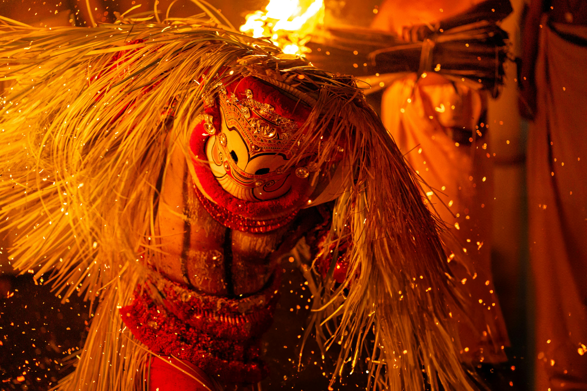
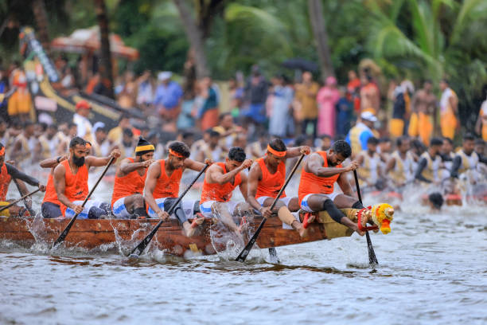
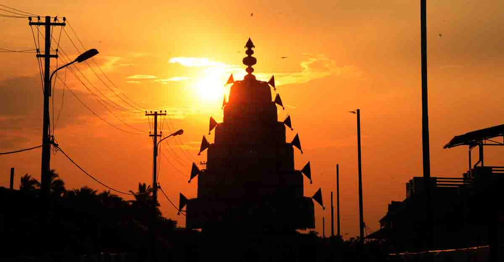
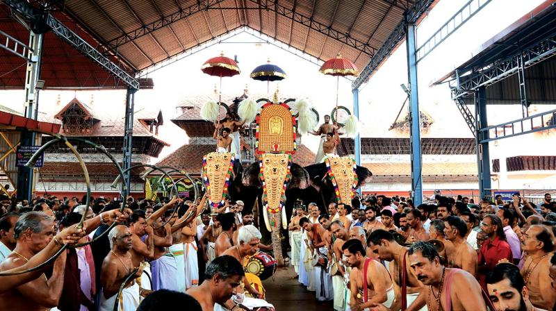

Parumala Perunnal
The Perumal Perunnal, celebrated with immense devotion at Parumala Church in Pathanamthitta, honors Saint Geevarghese Mar Gregorios, affectionately known as Parumala Thirumeni. The festival begins with solemn prayers and culminates in a majestic procession carrying the saint's relics. Pilgrims dressed in white throng the churchyard, singing hymns and lighting candles. Traditional music bands and colorful parasols add grandeur to the celebration, transforming the entire village into a sea of faith and festivity. The event beautifully blends spirituality, cultural artistry, and communal harmony.

Alpashi Utsavam
Alpashi Utsavam, observed during the Malayalam month of Thulam (October–November), is one of Kerala's most significant temple festivals, especially at the iconic Sree Padmanabhaswamy Temple. The festival features ten days of rituals, including the grand Aarattu procession, where the deity is taken to Shankhumugham Beach for ceremonial immersion. Accompanied by caparisoned elephants, traditional percussion ensembles, and chants, this sacred spectacle draws devotees and tourists alike. The event reflects Kerala's deep-rooted royal traditions and its seamless blend of devotion and artistry.

Payippad Boat Race
The Payippad Boat Race, held on the shimmering Payippad Lake near Haripad, is a thrilling fusion of devotion, teamwork, and tradition. Dedicated to Lord Subramanya, the race commemorates the legend of devotees transporting the deity's idol by boat to the Haripad Temple. Hundreds of oarsmen in vibrant uniforms row in rhythmic unison to the beat of drums and the chants of Vanchipattu (boat songs), as thousands of spectators cheer from the banks. Beyond its competitive spirit, the festival reflects Kerala's riverine culture and the unity of its people.

Kottapuram Boat Race
The Kottapuram Boat Race, hosted on the serene backwaters of Kodungallur, showcases the breathtaking energy of Kerala's famed Chundan Vallams (snake boats). Each boat, stretching over 100 feet, glides like a serpent through the water, powered by synchronized rowers and accompanied by the thunderous rhythm of traditional percussion. Villages along the banks come alive with decorations, food stalls, and cultural programs, transforming the day into a carnival of colors and sound. The event is a heartfelt tribute to Kerala's age-old maritime legacy and spirit of camaraderie.

Kalpathi Rathotsavam
The Kalpathi Rathotsavam, celebrated in the historic Tamil Brahmin village of Kalpathi near Palakkad, is one of the most colorful chariot festivals in South India. The ten-day event culminates with grand processions where exquisitely decorated wooden chariots carrying the idols of Lord Vishwanatha and Goddess Parvathy are pulled through the streets by thousands of devotees. The air resonates with the sound of conch shells, Nadaswaram music, and Vedic chants, creating an atmosphere of divine ecstasy — a magnificent expression of unity, faith, and traditional craftsmanship.

Guruvayur Ekadashi
Guruvayur Ekadashi is one of the holiest days for devotees of Lord Krishna, observed with unmatched devotion at the renowned Guruvayur Temple. The festival includes a series of religious rituals, devotional recitals, and a solemn procession of the deity's idol atop a richly adorned elephant. The highlight is the "Vilakku Ekadashi," when thousands of lamps illuminate the temple premises, creating a breathtaking spectacle of light and faith — an experience that embodies Kerala's spiritual heart and timeless cultural identity.